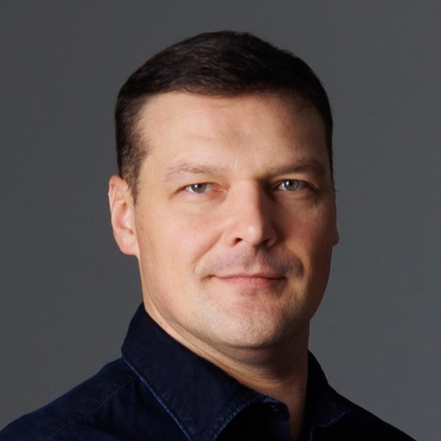

Вычислительное материаловедение
Илья
Чепкасов
Старший научный сотрудник · Сколтех
Кандидат физико-математических наук
DFT · MD · Machine Learning

Вычислительное материаловедение
Старший научный сотрудник · Сколтех
Кандидат физико-математических наук
DFT · MD · Machine Learning
